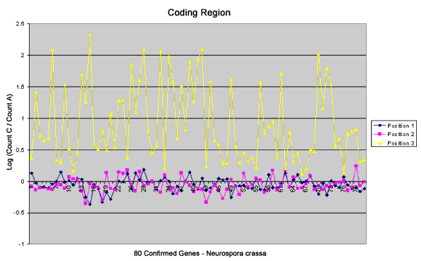

Neurospora crassa
There is much funding and research effort targeted at vertebrate
biology especially related to the Human Genome Project, yet many of our fundamental
studies continue to utilize lower organisms due to ethical considerations and
ease of manipulation. Neurospora crassa is an organism which has been
historically studied because of the clarity of genetic lines and the relative
ease of maintaining and crossing the organism. It has been found that there
are an appreciable number of Neurospora genes that have homology to vertebrate
genes .There are also a surprising number of novel genes that are yet unexplored.
Because of these considerations, Neurospora crassa has been classified
as a model organism by NIH, the National Human Genome Research Institute.
Several thousand genes of Neurospora crassa have been partially characterized by single pass sequencing of Expressed Sequence Tags (ESTs) from several separate cDNA libraries. (http://biology.unm.edu/biology/ngp/home.html). A German consortium has obtained funding for sequencing of linkage groups II and V; the genomic sequencing is being done by Munich Information Centre for Protein Sequences (MIPS), and over 5.6 megabases of sequence have already been generated http://www.mips.biochem.mpg.de/ ). As with any genome project, sequencing is only the beginning. Analysis of the results of the sequencing is generating much interest in and need for computational algorithms that locate coding regions and regulatory regions, analyze protein folding and function and ultimately define biological pathways. The tools for analyzing sequenced ESTs and genomic sequences (which are becoming available at an astonishing rate) are crude. Both the selectivity and specificity of genes predicted by current algorithms are less than 50% when applied to Neurospora genomic sequences.
Codon Bias
Because of the degeneracy of the genetic code, most amino acids are specified
by more than one codon. The choice of codons is not random and selection varies
with species.
The distribution of nucleotides in the first and second position of the codons correlates with amino acid content of proteins because little redundancy exists in these positions. The predictive distribution of codons for the average protein, assuming random codon usage, is shown in Fig. 1.
Fig. 1. Predicted nucleotide distribution by position in codons for the coding region of a protein with average amino acid content, and with redundant codons chosen at random. The distributions for positions 1 and 2 have distinct shapes caused almost exclusively by amino acid composition. The distribution for position 3 is quite flat due to the fact that redundancy is highest in the third position.
Third position is rather flat because the translation from amino acid back to nucleotides was done randomly across all possible codons. In Neurospora, actual third position looks more like that shown in Fig. 3a for a typical gene with Neuros pora codon bias. For the sake of comparison, a random backtranslation of the same Neurospora gene is also shown in 3b.
Fig. 2. Comparison of actual and predicted distribution by position in the coding region of the N. crassa his-3 gene. a. The actual count of each base in each position for the coding region. Note that the profiles for positions 1 and 2 are similar to those predicted in Fig. 1. In contrast the profile for position 3 is dramatically different from that predicted due to strong bias in the choice among redundant codons. b. The backtranslation for predicted codon distribution for his-3 derived from the amino acid sequence, with random assignment of codons for amino acids with codon redundancy.
As shown for the his-3 gene in Fig. 2, the third position is the only significantly biased position. The bias in Neurospora is specifically in an exaggerated number of cytosines and a near absence of adenosines in the third positions of the codons.
There is also a marked difference between coding and non-coding regions of Neurospora (Fig. 3). Coding regions show the striking bias toward C residues and against A’s in the third position that doesn’t exist in non-coding flanking regions, where position has no meaning.
Fig. 3. Comparison of bias in codon regions verses flanking non-coding regions of the N. crassa his-3 gene. Position has no meaning in non-coding regions, so counts were taken both in a single position and as an average of all positions, resulting in similar distributions. a. Coding region shows the distinct bias in Adenosines and Cytosines. b. Non-coding regions show no significant bias in third position.
There is preliminary evidence that the log of the ratio of the count of cytosines to the count of adenosines in the third position of the codon would be a more statistically significant indicator of coding region than any method that uses all three positions and all four nucleotides. It appears that using only the most exaggerated elements in the evaluation of coding regions eliminates a diluting effect of those elements that are less significantly different. Figure 4 compares the log10(c ount C/ count A) of coding regions with various non-coding regions: the introns, 5’ untranslated region (UTR) and 3’ untranslated region. Figure 6 compares the log10(count C/ count A) of the three positions.
Fig. 4. Comparison using 80 well characterized Neurospora genes of the third position of the coding region with all positions of several non-coding regions: 5' UTR, 3' UTR, and introns. Since position in noncoding regions is insignificant, the data used were an average of all positions. The exons or coding regions are easily distinguished from any non-coding regions in most genes. The exceptions have been verified and indicate that the problem of finding coding regions is not trivial. (The order of the eighty genes along the X axis is arbitrary.)

Fig. 5. Comparison using 80 well defined Neurospora crassa genes of the three positions in the coding regions only. Using the Log(Count C / Count A), the third position can be distinguished. This will be used to detect the reading frame and find coding regions.
Preliminary work on this project indicates that the codon bias algorithm can be used to find the frame and approximate location of larger exons. A sliding window of 99 (33 codons)collects the logC/A) in columns corresponding to the 3 positions of the codon. The graph shows each position although the numbers are relative to the start of the sequence. Remember that the true third position is the bias position and coding regions are recognized when the log ration in the third position is high.
Fig. 6. Identification of exons in the sod-1 gene of N. crassa. Three of the four exons are easily identified and their reading frames determined. Actual reading frames are between nucleotides 96-108, 396-575, 676-827 and 886-100 5. The window size, 99 must be added to the nucleotide index of the end of each elevated area on the graph because the log ratio is calculated over a window of 99 nucleotides.
Matching Partially Conserved Patterns
There are several short partially conserved consensus sequences documented in Neurospora which are of potential value in the identification of coding and non-coding regions. The Kozak sequence is a 14 base sequence surrounding the start co don, with nearly 100% conservation of the AUG start codon . The introns have 5' and 3' consensus sequences plus a lariat sequence within 6 to 29 bases of the 3' sequence. In all of these consensus sequences there are some very highly conserved bases that are treated as 100% conserved for the test algorithm.
Fig. 7. Splice site consensus sequences. In the consensus sequences shown above, a nucleotide must occupy a position with a frequency of .5 or better to be included. Two bases representing a combined frequency of greater than or equal to .75 are i ncluded in parentheses to indicate a choice of two nucleotides for one position. Positions designated N are not biased in favor of a particular nucleotide. Nucleotides with a slash occur at lower frequency than expected. Dashes indicate intron-exon bounda ries.
A pattern matching algorithm has been developed to find and score all possible matches of each type of conserved sequence. These sequences are used in conjunction with the Log (Count C/Count A) to locate coding regions.
Return to NEX
Neurospora Exon Finder Homepage
Copyright 2000 Judith B. Galbraith, AHPCC Research
Assistant